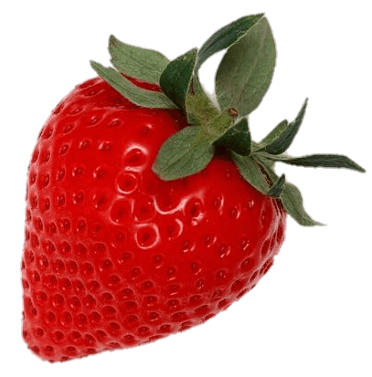

Erin's Recipe Research
Berries & Cream Cake
Info Blurb
This light and fluffy mixed Berry and Cream Sponge Cake is layered with jam, heavy whipping cream and fresh berries. If you need a simple no fuss cake, then this is the recipe.
Ingredients
Cake:
- 2 1/2 cups cake flour
- 2 teaspoons baking powder
- 1/2 teaspoon baking soda
- 1 teaspoon salt
- 3/4 cup unsalted butter, softened to room temperature
- 1 3/4 granulated sugar
- 5 large eff whites, at room temperature
- 1/2 cup sour cream, at room temperature
- 1 tablespoon pure vanilla extract
- 1 cup of whole milk, at room temperature
- 2 cups cold heavy cream or heavy whipping cream
- 1/3 cup confectioners' sugar
- 1/2 teaspoon baking soda
- 1 teaspoon pure vanilla extract
- 2 cups fresh mixed berries
Instructions
- Make the cake: Preheat the oven to 350°F (177°C). Grease three 8-inch or 9-inch cake pans, line with parchment paper rounds, then grease the parchment paper. Parchment paper helps the cakes seamlessly release from the pans. I recommend using nonstick spray for greasing. I also recommend 8 inch cake pans as the 9 inch cakes will be pretty thin.
- Whisk the cake flour, baking powder, baking soda, and salt together. Set aside.
- Using a handheld or stand mixer fitted with a whisk attachment, beat the butter on high speed until smooth and creamy, about 1 minute. Add the sugar and beat on high speed for 2 minutes until creamed together. Scrape down the sides and up the bottom of the bowl with a rubber spatula as needed. Add the egg whites. Beat on high speed until combined, about 2 minutes. Then beat in the sour cream and vanilla extract. Scrape down the sides and up the bottom of the bowl as needed. With the mixer on low speed, add the dry ingredients until just incorporated. With the mixer still running on low, slowly pour in the milk until combined. Do not overmix. You may need to whisk it all by hand to make sure there are no lumps at the bottom of the bowl. The batter will be slightly thick.
- Pour batter evenly into cake pans. Bake for around 22-24 minutes or until the cakes are baked through. To test for doneness, insert a toothpick into the center of the cake. If it comes out clean, it is done. Allow cakes to cool completely in the pans set on a wire rack. The cakes must be completely cool before assembling.
- Make the whipped cream: Using a hand mixer or a stand mixer fitted with a whisk attachment, whip the heavy cream, confectioners’ sugar, vanilla extract, and almond extract on medium-high speed until medium peaks form, about 3-4 minutes. Medium peaks are between soft/loose peaks and stiff peaks and are the perfect consistency for decorating cakes. Use immediately or cover tightly and chill in the refrigerator for up to 24 hours. Yields about 4 cups.
- Assemble cake: If cooled cakes are domed on top, use a large serrated knife to slice a thin layer off the tops to create a flat surface. This is called “leveling” the cakes. (Discard thin layer or crumble over ice cream.) Place 1 cake layer on your cake stand, cake turntable, or serving plate. Evenly spread 1 heaping cup of whipped cream on top. I always use an icing spatula to spread. Arrange a single layer of mixed berries on top. Top with 2nd cake layer. Spread another 1 heaping cup of whipped cream on top, then a single layer of berries. Top with 3rd cake layer. Spread remaining whipped cream on top and garnish with fresh berries. Add a dusting of confectioners’ sugar on the berries, if desired, and/or garnish with fresh florals.
- Chill the assembled cake, uncovered, for at least 2 hours and up to 1 day before slicing and serving. This time in the refrigerator helps the whipped cream thicken and makes cutting neater and easier. If chilling for longer than a few hours, you can carefully cover it with plastic wrap or use a cake carrier for storing in the refrigerator (what I always store my cakes in!). *Note that the berries could begin to release their juices if kept in the refrigerator for longer than 2 hours. For cutting, I recommend using your sharpest knife and cutting slowly.
- Cover leftover cake tightly and store in the refrigerator for up to 5 days.
Original Recipe

Sample Images


Three Recipe Websites for Reference
- Delish Website
I chose this website because it is very clean and on the actual website page, I feel like it is very simple and clean. I like that it has buttons on the top of the page that allow the user to quickly jump to the section of the page they want.
- Bon Appetit Website
Similarly to the previous example, the page is very clean and easy to navigate. You are not overwhelmed by the information. Also enjoy the way the header is broken up into who sides, one with the recipe information and the other with a large image, which is different than a lot of the other recipe websites out there. I also think the use of images to represent what tools you need is fun.
- Saveur Website
I like how modular the recipe page feels with things being somewhat askew and not neccessarily in a strict grid. The heirarchy on the page is also very clear between information. There is also a nice scale shift in the text and the images.
Three Well-designed Websites
- Toiletpaper Magazine Website
I love how bright and colorful this magazine is. The somewhat strange imagery and maximalist aesthetic fits the content of their magazine which highlights surreal imagery with no text. I think the animation on the images is really nice and something I would like to incorporate into my own site. I also enjoy the collage aesthetic.
- Imperfect Foods Website
I like the style of graphics on this site. On my own website, I would like to explore icon design and a sketched style to graphics.
- National Garden Association Website
I like the font choice on this page as well as the delicate nature of the graphics. The very modular design could also be interesting to explore in my own site.